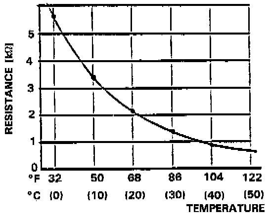

Operation CHARM
: Car repair manuals for everyone.
Home
>>
Acura
>>
1987
>>
Legend Sedan V6-2494cc 2.5L SOHC FI
>>
Repair and Diagnosis
>>
Sensors and Switches
>>
Sensors and Switches - HVAC
>>
Ambient Temperature Sensor / Switch HVAC
>>
Specifications
Ambient Temperature Sensor / Switch HVAC: Specifications

Ambient Temperature Sensor
Temperature / Resistance Specifications